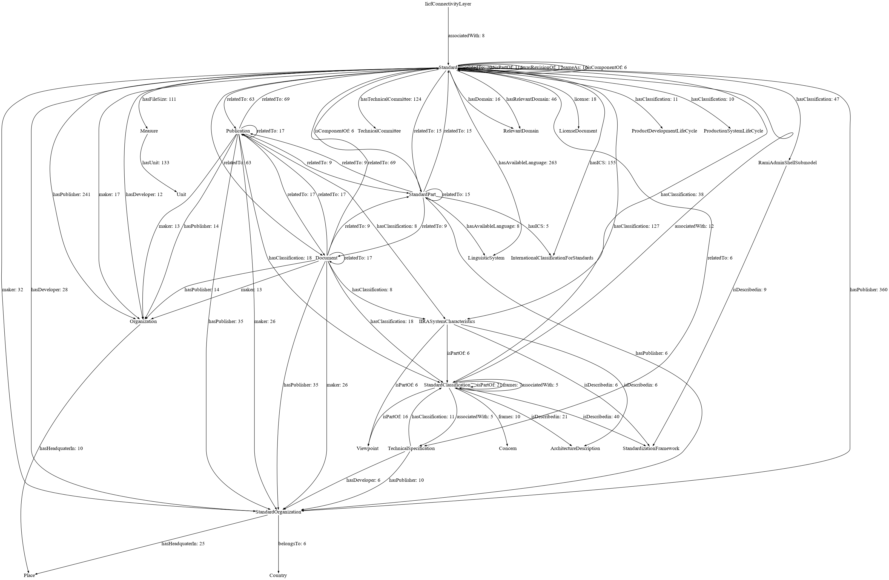
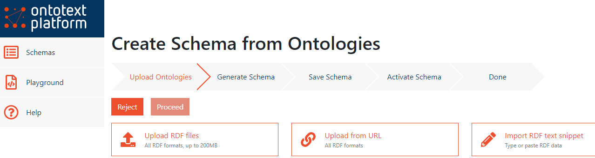
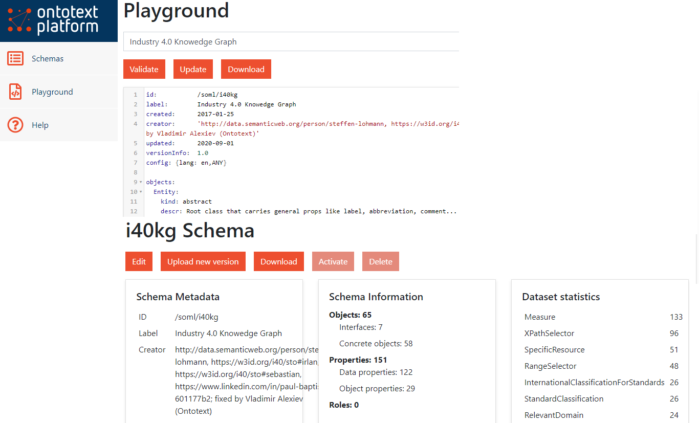
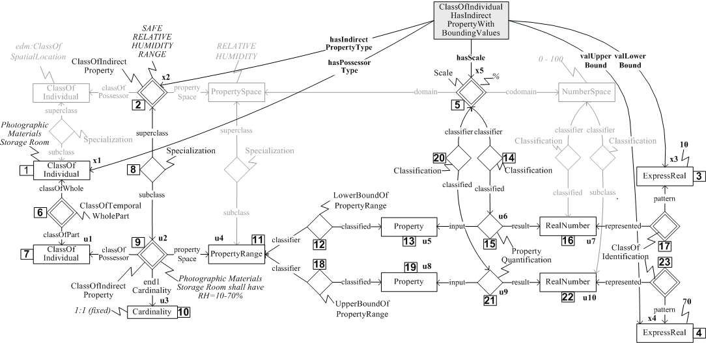

Exploring Industry 4.0 Standards with the Ontotext Platform
Vladimir Alexiev & Miroslav Chervenski, Ontotext
2020-09-08, Semantics 2020 vendor videos
Overview
Intro
- Hi, my name is Vladimir Alexiev and I’m Ontotext’s Chief Data Architect.
- Miroslav Chervenski who is the Ontotext Platform Product Manager also contributed to this presentation.
In our work with Industry data, we have researched a number of industrial data standards. This presentation is an intro to the Industry 4.0 Knowledge Graph by Fraunhofer IAIS and how we used the Ontotext Platform for simplified access and exploration of this KG.
Key resources (more links further in the slides):
- My publications: http://rawgit2.com/VladimirAlexiev/my/master/index.html
- This presentation: http://rawgit2.com/VladimirAlexiev/my/master/pres/20200908-i40kg-semantics/Slides.html
- Industry 4.0 KG main visualization: http://i40.semantic-interoperability.org/
- Ontotext Platform documentation: http://platform.ontotext.com/
- Try the GraphQL queries: http://platform-test.ontotext.com/graphiql/ (to appear shortly)
Industry Standards
- Numerous “traditional” standards for design, manufacturing, automation, control, quality etc
- New and upcoming standards for Industry 4.0, digital twins, Industrial IoT, asset management, etc
- The standards landscape is large and puzzling, how can one understand it?
Standard classification frameworks:
- Current Standards Landscape for Smart Manufacturing Systems, NISTIR 8107, NIST, 2016-02
- The Industrial Internet of Things. Volume G1: Reference Architecture. IIRA v1.9, Industrial Internet Consortium, 2019-06
- Reference Architectural Model Industrie 4.0 (RAMI 4.0), German Electrical and Electronic Manufacturers’ Association (ZVEI)
- Asset Administration shell, German Electrical and Electronic Manufacturers’ Association (ZVEI)
Industry 4.0 Knowledge Graph
(formerly Standards Ontology), Fraunhofer IAIS
- Describes semantically 320 standards, their classification, purpose, relations, etc
- Documentation: https://i40-tools.github.io/I40KG/docs
- Main visualization: http://i40.semantic-interoperability.org/
- Extra visualizations: https://i40-tools.github.io/StandardOntologyVisualization/
- The Industry 4.0 Standards Landscape from a Semantic Integration Perspective, Emerging Technologies and Factory Automation (ETFA), 2017-09
- Classifies standards according to various methodologies and levels: Admin Shell Sub Model, Alliance of Industrial Internet Architecture Classification, Fiware Chapter, IDS RAM Layer, IIRA Functional Domain, ISA 95 Level, IVI Layer, IoT-A Perspective, NGSI Context Information Management API, Product Development Life Cycle, Production System Life Cycle, RAMI Hierarchy Level, etc
I40KG Main Visualization
(This is a partial view, click for full version)

I40KG Standards Classification
Standards Classification visualization: “progressive zoom”

I40KG Concerns
- Addresses about 160 Concerns
AI AccessPolicy Access_Rights_for_IoT-Cloud Accountability Actuation Adaptability Agility Anonymity AssetManagement Authentication Authorization Auto_Scaling AutonomousCommunication AutonomousConfiguration Availability Awareness Bandwidth BigDataApplications BusinessContext BusinessProcessManagement BusinessTransactions BusinessValue CardinalityOfDataSources CardinalityOfParticipants Certification CloudComputing Communication ComplexEventProcessing Compliance Confidentiality Connectivity ConstrainedDevices ContextAwareness CostEfficiency CrossDomainIdentityManagement Customization DataAccess DataAccessControl DataAggregation DataAnalytics
…
ServiceChoreography ServiceComposition ServiceDeployment ServiceDescription ServiceDiscovery ServiceIsolation ServiceLevelAgreements ServiceLifecycleManagement ServiceOrchestration ServiceSelection Service_Recovery Software_Updates SpatialModeling StreamProcessing SyntacticInteroperability SystemEvolution SystemRecovery ThingDescription ThingMobility ThingRepresentation TimeSynchronization Trustworthiness Unicast UnreliableNetwork UserInteraction UserPreferences VendorLockin VirtualEntity
I40KG Model (Described)

So, how do we use this wealth of semantic data? We need to understand its model: what ontologies it uses and how they are put together.
- The paper The Industry 4.0 Standards Landscape from a Semantic Integration Perspective at ETFA 2017 provides a good description, and the basic data looks like this.
I40KG Model (Actual)
{kind=link}
Relations between classes with >=5 instances (click for large version)

Exploring with the Ontotext Platform
- Made various fixes to ontology (eg duplicated prop definitions, redundant props) and data (eg
dbr:_Arizonashouldn’t have leading underscore) - Generated Semantic Object (SOML) Model from the ontology with owl2soml (see github): Schema>Create wizard

SOML Schema
Made a number of additions and fixes, then Activated:

GraphQL Query 1: Standards and Classifications
- The Platform uses the SOML definition to generate GraphQL schema, query and mutation framework, transpile to SPARQL, format results as JSON, generate SHACL for validation, etc.
- GraphQL queries practically write themselves! (Due to schema introspection)
Eg “give me standards that have both International Classification of Standards (hasICS) and some classifications that have both isDescribedin and associatedWith relations”
{
standard(where:{hasICS:{}
hasClassification:{isDescribedin:{} associatedWith:{}}} limit:10) {
label{value}
hasPublisher{orgName{value}}
hasICS{title{value}}
hasClassification{id
isDescribedin{id}
associatedWith{id}
}
}
}GraphQL Result 1: Standards and Classifications
(Brackets compressed and empty arrays skipped for brevity)
"standard": [{
"label": {"value": "IEC 60839-5-2:2016"},
"hasPublisher": [{"orgName": {"value": "International Electrotechnical Commission"}}],
"hasICS": [{"title": {"value": "Alarm and warning systems"}}],
"hasClassification": [
{"id": "https://w3id.org/i40/sto#RamiControlDevice",},
{"id": "https://w3id.org/i40/sto#RamiFieldDevice",},
{"id": "https://w3id.org/i40/sto#RamiCommunicationlayer",},
{"id": "https://w3id.org/i40/sto#AsSecurity",
"isDescribedin": [{"id": "https://w3id.org/i40/sto#AdministrationShell"}],
"associatedWith": [
{"id": "https://w3id.org/i40/sto#BdvaCyberSecurityTrust"},
{"id": "https://w3id.org/i40/sto#DtpSecurityPrivacy"},
{"id": "https://w3id.org/i40/sto#FiwareSecurity"}]}]}"IEC 60839-5-2 by the IEC is about Alarm and warning systems and is classified in the areas RamiControlDevice, RamiFieldDevice, RamiCommunicationlayer; and AsSecurity (described in AdministrationShell, associated with BdvaCyberSecurityTrust, DtpSecurityPrivacy, FiwareSecurity)
GraphQL Query 2: Standards and Licenses
Let’s find entities (eg standards) and their licenses:
{entity(where:{license:{}}) {id
license{id}}}We get results, plus an error:
"errors": [{
"message": "Found 2 values for single-valued field 'license' from 'Entity'",
"path": ["entity", 3, "license"],
"locations": [{"line": 3, "column": 3}]}],Turns out that IEC_62541 is dual-licensed under GPLv2 and OpenLicenseDocument. So our assumption that entities have a single license (removing max:inf) is not 100% true.
GraphQL Query 3: ISO 15926
ISO 15926, in development for nearly 30 years, has been touted as the “lingua franca” for global interoperability.
Let’s find the classifications and standards that it is related to:
{standard(where:{label:{value:{EQ:"ISO 15926"}}}) {
comment{value}
hasClassification{id}
relatedTo {
id
label{value}
comment{value}}}}Response:
"standard": [{
"comment": {"value": "Industrial automation systems and integration -- Integration of life-cycle data for process plants including oil and gas production facilities."},
"hasClassification": [
{"id": "https://w3id.org/i40/sto#RamiProduct"},
{"id": "https://w3id.org/i40/sto#RamiIntegrationLayer"},
{"id": "https://w3id.org/i40/sto#AsConfiguration"},
{"id": "https://w3id.org/i40/sto#AsEngineering"},
{"id": "https://w3id.org/i40/sto#ProductLifeCycleManagement"}
],
"relatedTo": [
{"id": "https://w3id.org/i40/sto#DIN_SPEC_16592",
"label": {"value": "DIN SPEC 16592"},
"comment": {"value": "Combining OPC Unified Architecture and Automation Markup Language."}},
{"id": "https://w3id.org/i40/sto#IEC_62541",
"label": {"value": "IEC 62541"},
"comment": {"value": "OPC Unified Architecture (OPC UA) is an industrial M2M communication protocol..."}}
ISO 15926 Complexity
The complexity of ISO 15926 is difficult for most people to master.
Its approach to ontology modeling comes from the BORO method that uses:
- An Extensional (rather than linguistic) identity criterion
- Four-dimensional modeling (every entity evolution or state is represetned as another temporal part)
- Non-well-founded Sets and Powersets
- Pretty much every link is represented as a reified
Relationship(diamond nodes in the diagram below).
Eg here’s how to represent the allowed range of a parameter of some entity (tag or equipment): template CL-INDPTY-200 ClassOfIndividualHasIndirectPropertyWithBoundingValues with definition “Any member of EssentialType class hasPossessorType has a hasIndirectPropertyType with a range of valLowerBound to valUpperBound hasScale”

GraphQL Query 4: Concerns
I40KG includes a number of 200 “concerns” i.e. topics relevant to Industry (eg AI, DataAnalytics, etc).
{concern{
id
label{value}}}Let’s find which classifications are related to which concerns. We use prop frames defined as “A relation specifying that a vewpoint regards a Concern”:
{standardClassification(where:{frames:{}}) {
id
frames{id}}}Similarly, property hasTargetConcern connects Standards to Concerns:
{standard(where:{hasTargetConcern:{}}) {
id
hasTargetConcern{id}}}